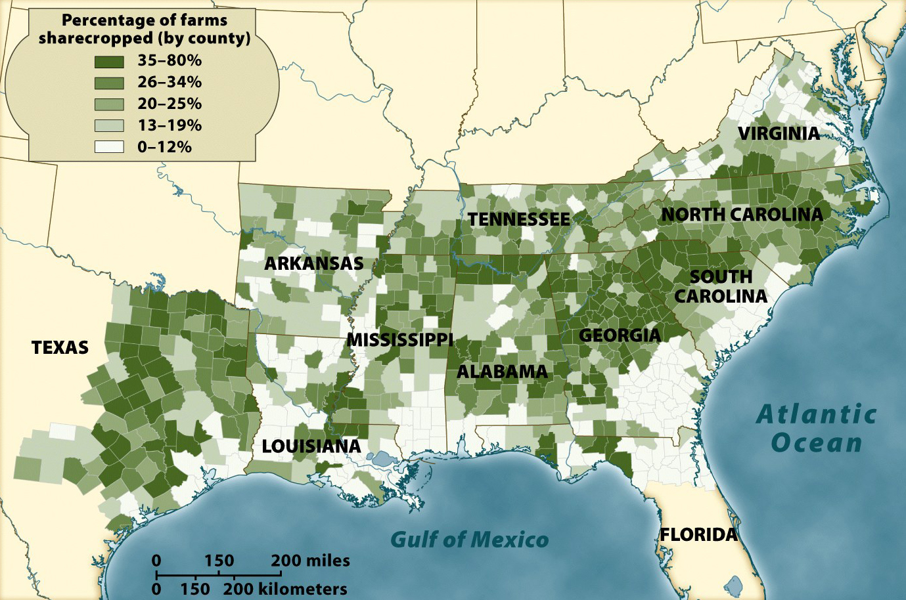

Prevalence of Sharecropping, 1880

Following the Civil War, slavery was no longer legal. Southerners sought to re-create
their prewar social and economic order as closely as was possible, and the result was an
economic system called 'sharecropping.' In this system, a laborer would be given a piece of
land to use, often accompanied by farming equipment, seeds, fertilizer, etc. They would
then pay for these expenses out of their harvest at the end of the year. Though this system
seems equitable and capitalistic in nature, the year-end bill (with interest) was almost
invariably more than the harvest was worth, keeping sharecroppers in a perpetual state of
indebtedness.
Though there were some white sharecroppers, the purpose of the system was to keep former slaves
in a state of peonage. As such, the map showing the prevalence of sharecropping bears a strong
resemblance to the map showing the concentration
of slave labor before the Civil War.
Note: Click on the image for a larger version.
Source: Eric Foner, Give Me Liberty! An American History (New York: W. W. Norton & Company, 2008).
|

{kind=link}